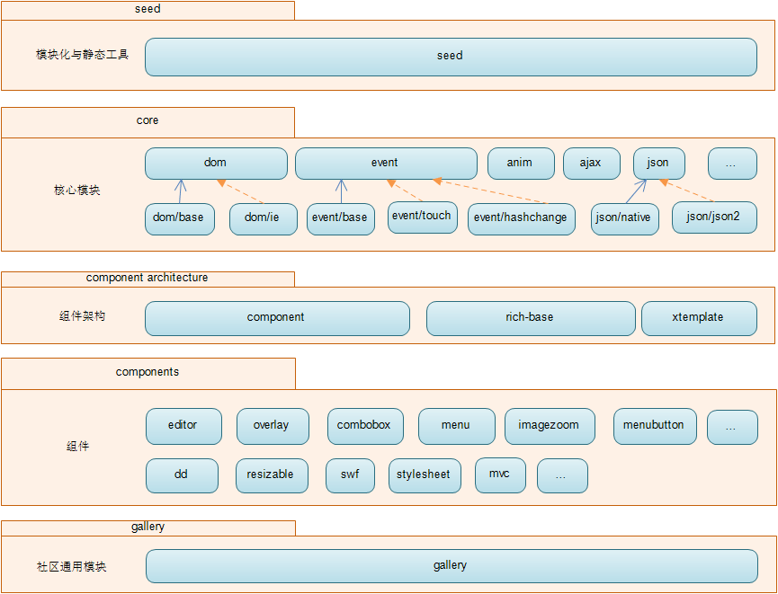

KISSY - 简易指南
刚开始使用KISSY的童鞋看过来，快速上手文档在这里。
Let's go
简介
KISSY是淘宝的前端类库。
优点如下：
- A、开发便捷， 在模块化，组件以及工具辅助方面形成了一套完善的机制；
- B、综合借鉴国际先进的框架类库设计；
- C、应用场景广泛：支持pc和移动端的开发。
核心全部加载的方式引入
核心全部加载就是引入整个KISSY库
如果你下载了源码，直接引入kissy-min.js
<script src="kissy-min.js"></script>如果你没下载源码，可以直接引用淘宝cdn上的地址
<script src="http://a.tbcdn.cn/s/kissy/1.3.0/kissy-min.js"></script>下面来看一个demo
demo
下面会通过这个demo介绍KISSY的基本用法
操作元素
KISSY使用了类似jQuery的链式操作，熟悉jQuery的用户可以很快的上手
只需定义
var $ = KISSY.all就可以进行如下操作
var imgList = $('.img-list').all('li'); //获取图片列表$(imgList[0]).addClass('active'); //添加classvar cloneItem = $(imgList[0]).one('img')
.clone()
.appendTo('.content')
.css({
'width': '100px',
'height': '100px'})
.animate({
'top': '100px'
}, 0.2, 'easeOut') //链式操作绑定事件
KISSY中的事件绑定非常简单
KISSY.Event.on('button', 'click', function(ev){
//do something
}也可以用链式方式
$('button').on('click', function(ev){
//do something
}Ajax
KISSY中对Ajax操作进行了一些封装，比如要发起一个GET请求
KISSY.IO.get('./server.php', {'param': '001'}, function(data){
$('.detail').html(data);
}, 'json')上面的代码表示向后台 server.php 发起了一个GET请求,
请求的参数是 param=001，请求返回的数据格式是 json，
请求成功后将返回的数据填充到元素 $('.detail')中
整体架构
介绍seed引入之前，先了解一下KISSY 整体架构图
1、最底层的 seed 是类似目前流行的 AMD 模块化机制实现。
2、第二层是处理 dom 兼容性的核心模块，每个模块由更小的模块打包合并而来。
3、第三层为组件架构层。
4、第四层为独立可用的 KISSY 组件。
5、最外层为 KISSY gallery，KISSY 社区开发的一些通用模块。